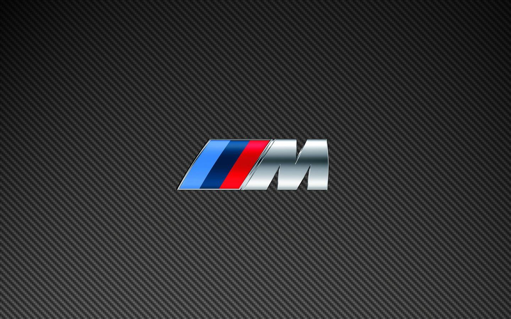

BMW M
BMW M - это особая линейка автомобилей BMW!Эти автомобили оснащенны осыбым двигателем,подвеской.Литера «M» в названии компании M GmbH всегда указывала на принадлежность моделей к узкому кругу настоящих спортивных автомобилей. Современные представители серии М продолжают укреплять престиж марки. Среди них — BMW M2, BMW M235i xDrive Gran Coupe, BMW M3 Competition, BMW M4 Competition Coupe, BMW M440i xDrive Cabrio, BMW M5 Competition, BMW M760Li xDrive, а также BMW X3 M и BMW X4 M.
